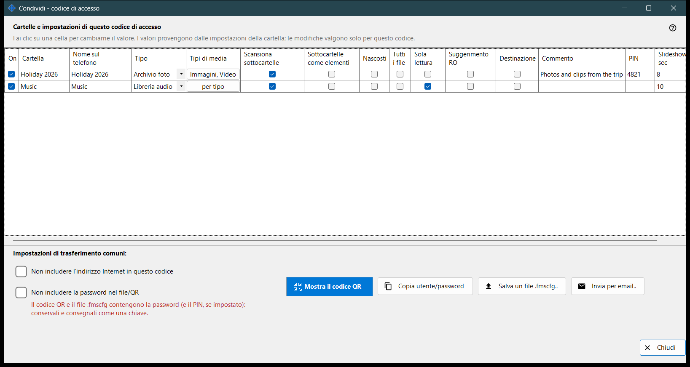
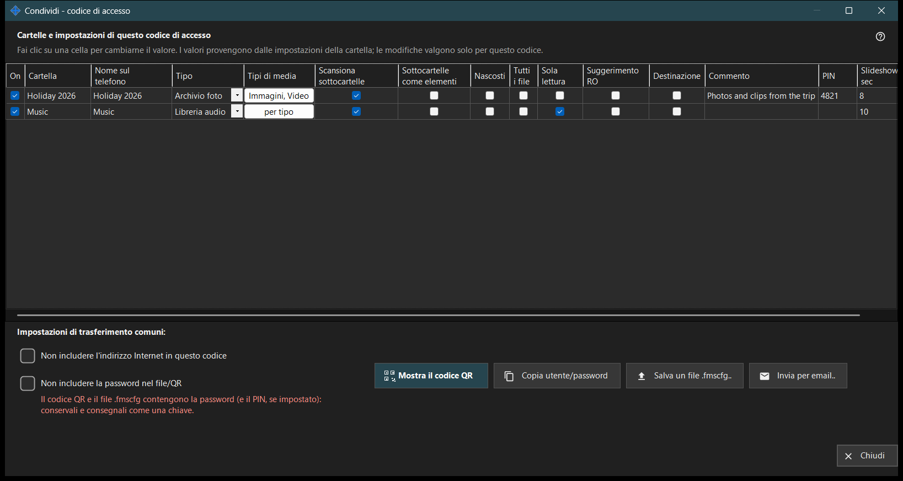

Condividi - codice di accesso
Scopo
Crea il codice di accesso per un telefono: un codice QR e un file .fmscfg che contengono l'indirizzo, l'utente e le cartelle scelte. Si apre dal pulsante «Condividi» della finestra principale mentre la condivisione è attiva e, prima di consegnare il codice, verifica che il telefono possa davvero raggiungere il PC.


In questo ordine
- Spunta le cartelle da inserire nel codice.
- Modifica ogni cella della tabella che deve essere diversa per questo codice.
- Se serve, spunta «Non includere l'indirizzo Internet in questo codice» oppure «Non includere la password nel file/QR».
- Attendi il controllo dell'accesso.
- Mostra il codice QR, salva il file .fmscfg, invialo per email oppure copia utente e password.
Gli elementi
Cartelle e impostazioni per questo codice di accesso
Una riga per cartella condivisa, con le colonne On, Cartella, Nome sul telefono, Tipo, Tipi di media, Scansiona sottocartelle, Sottocartelle come elementi, Nascosti, Sola lettura, Suggerimento RO, Destinazione, Commento e Slideshow, sec. Fai clic su una cella per modificarla. I valori partono dalle impostazioni di ogni cartella e le modifiche valgono solo per questo codice. «Sola lettura» è un vero blocco sul server; «Suggerimento RO» nasconde soltanto i pulsanti di modifica nell'app. Una cartella di destinazione è sempre scrivibile, quindi «Sola lettura» non si applica ad essa.
Impostazioni di trasferimento comuni
«Non includere l'indirizzo Internet in questo codice» fa sì che il telefono si connetta solo tramite la rete locale; non spegne il server, e l'accesso da internet per l'intera condivisione si chiude nelle impostazioni del gestore. «Non includere la password nel file/QR» toglie la password dal codice; trasmettila separatamente. La possibilità che il telefono accetti un codice senza password dipende dalla versione dell'app.
Controllo dell'accesso
Mentre lo stato viene letto, la finestra lo indica. Se il server non è in funzione, se nessuna cartella è spuntata o se manca un indirizzo utilizzabile, un suggerimento dice che cosa manca. Quando il controllo non si conclude, il codice e il file non vengono consegnati: premi «Ricontrolla l'accesso».
Mostrare il codice QR
Il codice QR e il file .fmscfg aprono l'accesso alle cartelle e contengono la password e il PIN, se impostato: conservali e consegnali come una chiave. Se le impostazioni sono troppo grandi per un codice QR, salva il file e invialo al suo posto.
File, posta e utente
«Salva un file .fmscfg..» scrive il file; su un file system che non può limitare l'accesso, o in una cartella che altri possono modificare, la finestra rifiuta perché il file contiene una chiave di accesso. «Invia per email..» allega il file con una nota che invita a importarlo nell'app Android e poi a eliminarlo. «Copia utente/password» mette entrambi negli appunti.
Impostazioni del gestore · Impostazioni condivisione SFTP · Impostazioni server di scambio